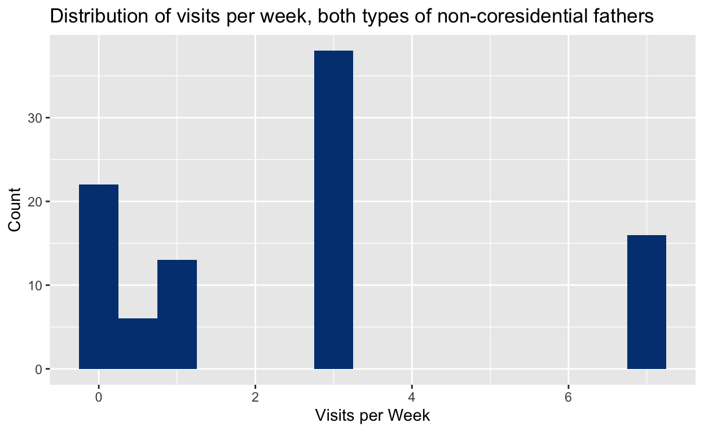
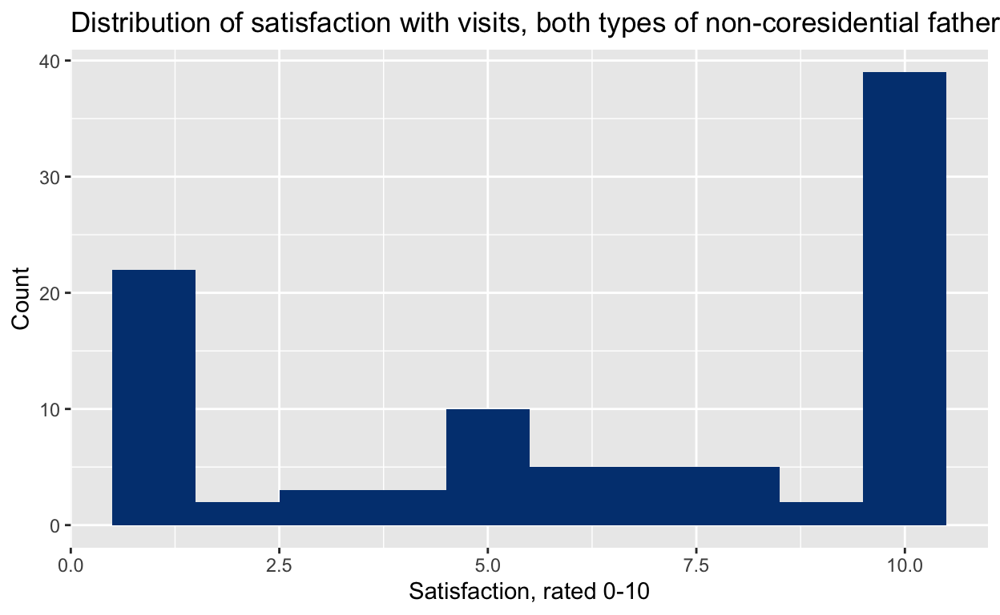
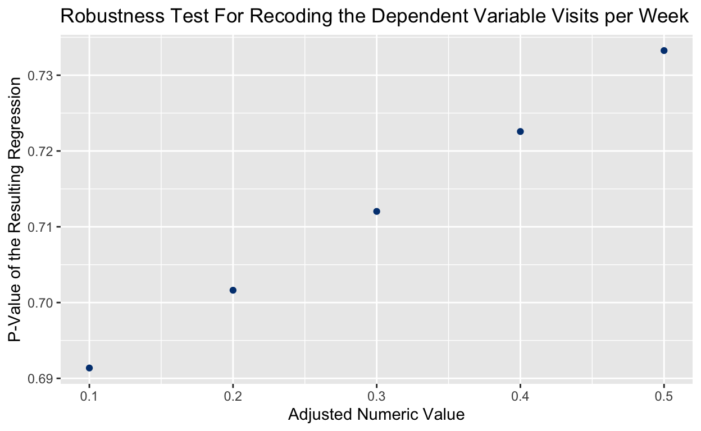
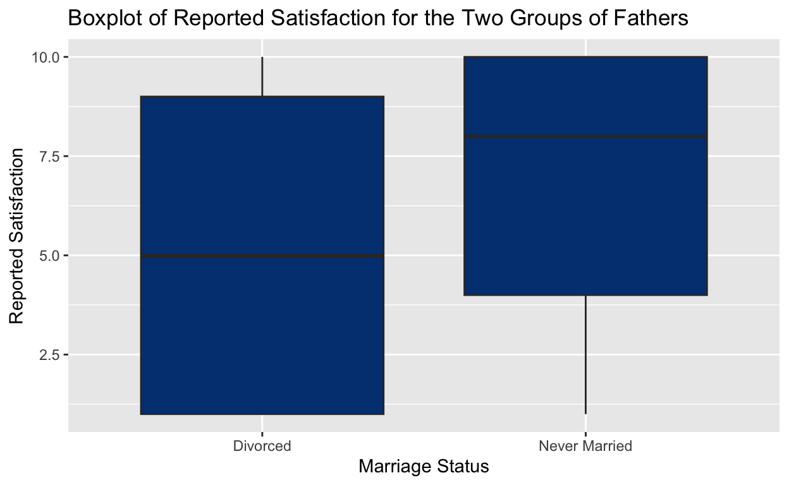
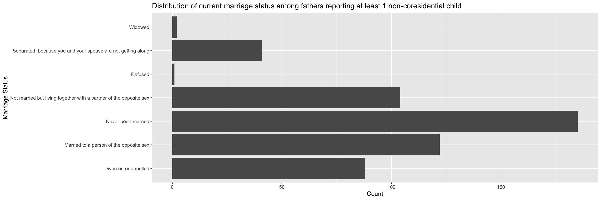

Comparing parental engagement between non-coresidential fathers of different marital statuses
My research question for this project was: do non-coresidential fathers, a.k.a. fathers who do not live with their children, have different levels of engagement with their children based on their marriage status? The two marriage statuses that I was particularly interested in were fathers who were never married and fathers who were married and then divorced or annulled. My hypothesis was that fathers who were married and then divorced would have higher levels of engagement with their children because if they were previously in a marriage with their partner that they had children with, then it would be likely that their level of engagement with their family overall, including their non-coresidential children, would be higher than a father who was never married to his partner.
This research question is interesting to me because there are many aspects of society and law in the U.S. that emphasize the importance of the institution of marriage, particularly for marriage’s purpoted benefits for children. As a large percentage of marriages end in divorce and as marriage rates are at historic lows, an interesting and common scenario to investigate is not the engagement of fathers who are still in marriages or still living with their children but fathers who are not. Is the emphasis on marriage justified by the outcomes for children of divorced parents or should the law encourage more non-traditional family structures that account for children outside of marriage.
The data that I am pulling from is the CDC’s National Survey on Family Growth. The survey collects data on both men and women and data is collected through continuous field interviews. The data that I am analyzing is data collected from 2017 to 2019 on men aged 15-44. This selection of data includes 5,206 men. This is a cross-sectional study, as we are looking at two groups of survey respondents at one point in time.
#Loading the Data and Packages
library(tidyverse)
library(infer)
men <- read_csv("data/csv_2017_2019_Male.csv")
#Cleaning the Data
#Filtering for only men who were never married or were divorced.
#Coding a binary variable to represent those two marriage statuses
#Recoding age as a numeric value.
div_nev_men <- men |>
filter(marstat == "Divorced or annulled" | marstat == "Never been married") |>
mutate(divorced_vs_never = case_when(marstat == "Divorced or annulled"~ 1,
marstat == "Never been married" ~ 0),
age_num = as.numeric(gsub("[^0-9]", "", AGE_A)))To answer my research question, I looked at two different dependent variables: number of visits and satisfaction with those visits. While the survey reports many different metrics for parental engagement such as going on errands, accompanying children to appointments, showing physical affection, spending play time, reading books, and eating meals, the variable that seemed most logical to summarize these more objective metrics of engagement was number of visits per week. I was also curious about a more subjective measure of parental engagement, and so looked at the satisfaction with these visits. I am examining the data collected only for fathers of children ages 0-4 (this limitation is explained in my conclusion). Below is the distribution of number of visits for both types of fathers:
#Recoding the survey answers into numerical values for visits per week
visit04_1 <- div_nev_men |>
filter(NRVISIT04 != "NA" & NRVISIT04 != "Not ascertained") |>
mutate(visit_bool_04_1 = case_when(NRVISIT04 == "Not at all" ~ 0,
NRVISIT04 == "Less than once a week" ~ 0.5,
NRVISIT04 == "About once a week" ~ 1,
NRVISIT04 == "Several times a week" ~ 3,
NRVISIT04 == "Every day (at least once a day)" ~ 7))
#Visualization of number of visits per week
visit04_1 |>
ggplot(aes(x=visit_bool_04_1)) +
geom_histogram(binwidth = 0.5, fill = "#004080") +
labs(title = "Distribution of visits per week, both types of non-coresidential fathers",
x = "Visits per Week",
y = "Count")
And here is the distribution for satisfaction of visits:
#Cleaning the satisfaction variable, no arbitrary judgements had to be made however
satvis04 <- div_nev_men |>
filter(NRSATVIS04 != "Refused" &
NRSATVIS04 != "Don't know" &
NRSATVIS04 != "Not ascertained") |>
mutate(sat_adjust04 = case_when(NRSATVIS04 == "Very satisfied" ~ 10,
NRSATVIS04 == "Very dissatisfied" ~ 1,
TRUE ~ as.numeric(NRSATVIS04)))
#Visualization of satisfaction with visits
satvis04 |> ggplot(aes(x=sat_adjust04)) +
geom_histogram(fill = "#004080", binwidth = 1) +
labs(title = "Distribution of Satisfaction with Visits, Both Types of Non-coresidential Fathers",
x = "Satisfaction, rated 0-10",
y = "Count") 
I first ran a regression with visits per week as the dependent variable and the marital status of the non-coresidential father as an independent binary variable. I’ve included age, race, and income into the regression as controls, but unfortunately that does make the output table annoyingly long.
#Regression
regression_visit04_1 <- lm(visit_bool_04_1 ~ divorced_vs_never +
age_num +
race +
totincr,
data = visit04_1)
#Outputting the model
modelsummary::modelsummary(regression_visit04_1, statistic =
c("s.e. = {std.error}",
"p = {p.value}"),
gof_map = c("nobs", "r.squared", "adj.r.squared"))| (1) | |
|---|---|
| (Intercept) | 1.996 |
| s.e. = 2.900 | |
| p = 0.493 | |
| divorced_vs_never | −0.240 |
| s.e. = 0.701 | |
| p = 0.733 | |
| age_num | −0.003 |
| s.e. = 0.037 | |
| p = 0.929 | |
| raceother | 1.096 |
| s.e. = 1.287 | |
| p = 0.397 | |
| racewhite | −0.939 |
| s.e. = 0.586 | |
| p = 0.113 | |
| totincr$100,000 or more | 1.120 |
| s.e. = 2.843 | |
| p = 0.695 | |
| totincr$12,500-$14,999 | 1.128 |
| s.e. = 2.762 | |
| p = 0.684 | |
| totincr$15,000-$19,999 | 0.841 |
| s.e. = 2.902 | |
| p = 0.773 | |
| totincr$20,000-$24,999 | 1.138 |
| s.e. = 2.728 | |
| p = 0.678 | |
| totincr$25,000-$29,999 | 0.248 |
| s.e. = 2.684 | |
| p = 0.927 | |
| totincr$30,000-$34,999 | −0.004 |
| s.e. = 2.769 | |
| p = 0.999 | |
| totincr$35,000-$39,999 | 1.269 |
| s.e. = 2.761 | |
| p = 0.647 | |
| totincr$40,000-$49,999 | −0.602 |
| s.e. = 2.786 | |
| p = 0.830 | |
| totincr$50,000-$59,999 | 2.812 |
| s.e. = 2.678 | |
| p = 0.297 | |
| totincr$5000-$7499 | −0.412 |
| s.e. = 2.982 | |
| p = 0.890 | |
| totincr$60,000-$74,999 | 1.099 |
| s.e. = 2.974 | |
| p = 0.713 | |
| totincr$75,000-$99,999 | 1.591 |
| s.e. = 2.791 | |
| p = 0.570 | |
| totincr$7500-$9999 | 1.143 |
| s.e. = 3.546 | |
| p = 0.748 | |
| totincrUnder $5000 | 0.815 |
| s.e. = 2.702 | |
| p = 0.764 | |
| Num.Obs. | 95 |
| R2 | 0.217 |
| R2 Adj. | 0.032 |
As it is a binary regression, the coefficient on our independent variable, divorced_vs_never, represents the difference in means of our dependent variable, visits per week, holding age, race, and income constant. According to the regression, the difference in the average value of visits per week between divorced fathers and never married fathers is -0.240. This means that divorced fathers see their kids 0.24 times per week less than never married fathers. However, the p-value for this regression is 0.733. This does not meet any threshold for statistical significance and so we cannot take this difference in visits to be statistically significant. There is thus nothing that we can really say about a significant average difference in visits for the two groups of father.
One arbitrary decision that I had to make when recoding the survey answers into numerical measures of visits per week was how to assign a number to answers such as “Less than once a week” or “Several times a week.” The most arbitrary decision I felt was for the former, for answers of “Less than once a week” which I first assigned a value of 0.5 visits per week. I wanted to conduct a robustness test on this decision to see if assigning a different value would provide a statistically significant outcome in the regression:
#Robustness Testing
#Recoding the visit variable in five different ways
#Decreasing the value for "Less than once a week" by 0.1 each time
visit04_1 <- div_nev_men |>
filter(NRVISIT04 != "NA" & NRVISIT04 != "Not ascertained") |>
mutate(visit_bool_04_1 = case_when(NRVISIT04 == "Not at all" ~ 0,
NRVISIT04 == "Less than once a week" ~ 0.5,
NRVISIT04 == "About once a week" ~ 1,
NRVISIT04 == "Several times a week" ~ 3,
NRVISIT04 == "Every day (at least once a day)" ~ 7))
visit04_2 <- div_nev_men |>
filter(NRVISIT04 != "NA" & NRVISIT04 != "Not ascertained") |>
mutate(visit_bool_04_2 = case_when(NRVISIT04 == "Not at all" ~ 0,
NRVISIT04 == "Less than once a week" ~ 0.4,
NRVISIT04 == "About once a week" ~ 1,
NRVISIT04 == "Several times a week" ~ 3,
NRVISIT04 == "Every day (at least once a day)" ~ 7))
visit04_3 <- div_nev_men |>
filter(NRVISIT04 != "NA" & NRVISIT04 != "Not ascertained") |>
mutate(visit_bool_04_3 = case_when(NRVISIT04 == "Not at all" ~ 0,
NRVISIT04 == "Less than once a week" ~ 0.3,
NRVISIT04 == "About once a week" ~ 1,
NRVISIT04 == "Several times a week" ~ 3,
NRVISIT04 == "Every day (at least once a day)" ~ 7))
visit04_4 <- div_nev_men |>
filter(NRVISIT04 != "NA" & NRVISIT04 != "Not ascertained") |>
mutate(visit_bool_04_4 = case_when(NRVISIT04 == "Not at all" ~ 0,
NRVISIT04 == "Less than once a week" ~ 0.2,
NRVISIT04 == "About once a week" ~ 1,
NRVISIT04 == "Several times a week" ~ 3,
NRVISIT04 == "Every day (at least once a day)" ~ 7))
visit04_5 <- div_nev_men |>
filter(NRVISIT04 != "NA" & NRVISIT04 != "Not ascertained") |>
mutate(visit_bool_04_5 = case_when(NRVISIT04 == "Not at all" ~ 0,
NRVISIT04 == "Less than once a week" ~ 0.1,
NRVISIT04 == "About once a week" ~ 1,
NRVISIT04 == "Several times a week" ~ 3,
NRVISIT04 == "Every day (at least once a day)" ~ 7))
#Running a regression for each of the different recodes
regression_visit04_1 <- lm(visit_bool_04_1 ~ divorced_vs_never +
age_num +
race +
totincr,
data = visit04_1)
regression_visit04_2 <- lm(visit_bool_04_2 ~ divorced_vs_never +
age_num +
race +
totincr,
data = visit04_2)
regression_visit04_3 <- lm(visit_bool_04_3 ~ divorced_vs_never +
age_num +
race +
totincr,
data = visit04_3)
regression_visit04_4 <- lm(visit_bool_04_4 ~ divorced_vs_never +
age_num +
race +
totincr,
data = visit04_4)
regression_visit04_5 <- lm(visit_bool_04_5 ~ divorced_vs_never +
age_num +
race +
totincr,
data = visit04_5)
#Adding the reported p-value from each regression into a list
coefficients <- summary(regression_visit04_1)$coefficients["divorced_vs_never", "Pr(>|t|)"]
coefficients <- append(coefficients, summary(regression_visit04_2)$
coefficients["divorced_vs_never", "Pr(>|t|)"])
coefficients <- append(coefficients, summary(regression_visit04_3)$
coefficients["divorced_vs_never", "Pr(>|t|)"])
coefficients <- append(coefficients, summary(regression_visit04_4)$
coefficients["divorced_vs_never", "Pr(>|t|)"])
coefficients <- append(coefficients, summary(regression_visit04_5)$
coefficients["divorced_vs_never", "Pr(>|t|)"])
#Also making a list of the different values set for "Less than once a week"
adjusted_values <- c(0.5, 0.4, 0.3, 0.2, 0.1)
#Making a tibble out of the two lists we just created
robustness_test <- tibble(coefficients, adjusted_values)
#Visualizing the test
robustness_test |> ggplot(aes(x=adjusted_values, y = coefficients)) +
geom_point(color = "#004080") +
labs(title = "Robustness Test For Recoding the Dependent Variable Visits per Week",
x = "Adjusted Numeric Value",
y = "P-Value of the Resulting Regression")
As we can see from the robustness test, adjusting the numerical values that correspond to “Less than once a week” does make a difference to the statistical significance, the most statistically significant difference came from choosing a value of 0.1, but it does not come close to any measure of statistical significance.
The difference in number of visits between the two groups of fathers was thus ultimately statistically insignificant (further discussion in results below), but there was a statistically significant difference in the self-reported satisfaction with visits. Here is the regression for satisfaction with visits, controlling for age, race, and income:
#Regression for satisfaction
#Using the previously calculated dependent variable sat_adjust04
regression_satvis04 <- lm(sat_adjust04 ~ divorced_vs_never +
age_num +
race +
totincr,
data = satvis04)
#Displaying the regression
modelsummary::modelsummary(regression_satvis04,
statistic = c("s.e. = {std.error}",
"p = {p.value}"),
gof_map = c("nobs", "r.squared", "adj.r.squared"))| (1) | |
|---|---|
| (Intercept) | 7.555 |
| s.e. = 4.583 | |
| p = 0.103 | |
| divorced_vs_never | −2.399 |
| s.e. = 1.108 | |
| p = 0.033 | |
| age_num | 0.016 |
| s.e. = 0.058 | |
| p = 0.782 | |
| raceother | −0.005 |
| s.e. = 2.035 | |
| p = 0.998 | |
| racewhite | −0.022 |
| s.e. = 0.924 | |
| p = 0.981 | |
| totincr$100,000 or more | −2.173 |
| s.e. = 4.498 | |
| p = 0.630 | |
| totincr$12,500-$14,999 | 1.049 |
| s.e. = 4.370 | |
| p = 0.811 | |
| totincr$15,000-$19,999 | −1.731 |
| s.e. = 4.591 | |
| p = 0.707 | |
| totincr$20,000-$24,999 | −1.394 |
| s.e. = 4.316 | |
| p = 0.748 | |
| totincr$25,000-$29,999 | −1.871 |
| s.e. = 4.246 | |
| p = 0.661 | |
| totincr$30,000-$34,999 | −2.718 |
| s.e. = 4.360 | |
| p = 0.535 | |
| totincr$35,000-$39,999 | −1.397 |
| s.e. = 4.367 | |
| p = 0.750 | |
| totincr$40,000-$49,999 | −4.121 |
| s.e. = 4.408 | |
| p = 0.353 | |
| totincr$50,000-$59,999 | 0.431 |
| s.e. = 4.237 | |
| p = 0.919 | |
| totincr$5000-$7499 | −2.629 |
| s.e. = 4.717 | |
| p = 0.579 | |
| totincr$60,000-$74,999 | 1.984 |
| s.e. = 4.706 | |
| p = 0.674 | |
| totincr$75,000-$99,999 | 0.251 |
| s.e. = 4.416 | |
| p = 0.955 | |
| totincr$7500-$9999 | −2.230 |
| s.e. = 5.609 | |
| p = 0.692 | |
| totincrUnder $5000 | −0.625 |
| s.e. = 4.274 | |
| p = 0.884 | |
| Num.Obs. | 96 |
| R2 | 0.191 |
| R2 Adj. | 0.002 |
The coefficient on divorced_vs_never in this binary regression represents the difference in means of satisfaction with visits holding age, race, and income constant. According to the regression, the difference in the average reported satisfaction with visits between divorced fathers and never married fathers was -2.399. Interpreting this substantively, divorced fathers were roughly two and a half points less satisfied with their visits (on a scale out of ten) than their never married counterparts. The p-value for this regression is 0.033. This meets the threshold for statistical significance with an alpha of 0.05.
Without controls for age, race, and income, the regression (see below) has a statistical significance of 0.062, only meeting the threshold for statistical significance with an alpha of 0.1. The coefficient of divorced_vs_never, the average difference in means between the two groups, is also lower - -1.754 - but is still in the same direction, with divorced fathers reporting less satisfaction than fathers who were never married.
#Regression without controls
regression_satvis04_no_controls <- lm(sat_adjust04 ~ divorced_vs_never,
data = satvis04)
#Displaying the regression
modelsummary::modelsummary(regression_satvis04_no_controls,
statistic = c("s.e. = {std.error}",
"p = {p.value}"),
gof_map = c("nobs", "r.squared", "adj.r.squared"))| (1) | |
|---|---|
| (Intercept) | 6.701 |
| s.e. = 0.414 | |
| p = <0.001 | |
| divorced_vs_never | −1.754 |
| s.e. = 0.930 | |
| p = 0.062 | |
| Num.Obs. | 96 |
| R2 | 0.036 |
| R2 Adj. | 0.026 |
Another way to visualize this difference, without controls for age, race, and income, is to look at a boxplot of the two types of fathers:
#First recoding for a Divorced and Never Married category
visualize_satvis04 <- satvis04 |> mutate(div_stat = ifelse(divorced_vs_never == 1, "Divorced", "Never Married"))
#Then piping to a ggplot visualization
visualize_satvis04 |> ggplot(aes(x = div_stat, y = sat_adjust04)) +
geom_boxplot(fill = "#004080") +
labs(title = "Boxplot of Reported Satisfaction for the Two Groups of Fathers",
x = "Marriage Status",
y = "Reported Satisfaction")
We can also calculate the average values and difference in means of the two groups, which gives us an equivalent answer to the regression without controls. The ATE of this calculation is equal to the coefficient of the divorced_vs_never binary variable and the average for Never Married fathers is equal to the value of the intercept in the regression.
#Getting mean values for each group and calculating the ATE
values <- visualize_satvis04 |>
group_by(div_stat) |>
summarize(mean_sat = mean(sat_adjust04)) |>
pivot_wider(names_from = div_stat, values_from = mean_sat) |>
mutate(ATE = `Divorced` - `Never Married`)
#Displaying the table
knitr::kable(values,
align = 'c')| Divorced | Never Married | ATE |
|---|---|---|
| 4.947368 | 6.701299 | -1.75393 |
We can test the null hypothesis of no difference in means by bootstrapping a confidence interval (without controls for age, race, and income):
#Generating 1000 bootstrapped samples
ate_satvis04 <- satvis04 |>
mutate(div_stat = ifelse(divorced_vs_never == 1, "Divorced", "Never Married")) |>
specify(sat_adjust04 ~ div_stat) |>
generate(reps = 1000, type = "bootstrap") |>
calculate(stat = "diff in means",
order = c("Divorced","Never Married"))
#Getting a 90% confidence interval from those samples
ate_satvis04_ci_90 <- ate_satvis04 |>
get_confidence_interval(level = 0.90, type = "percentile")
#Displaying the confidence interval
knitr::kable(ate_satvis04_ci_90,
col.names = c("Lower CI", "Upper CI"),
digits = 2,
align = 'c')| Lower CI | Upper CI |
|---|---|
| -3.32 | -0.1 |
We can see that an ATE of 0 falls outside of a 90% confidence interval, which corresponds to an alpha of 0.1. We can thus reject the null hypothesis of no difference in means, without controls for age, race, and income, for an alpha of 0.1.
#Getting a 95% confidence interval from those samples
ate_satvis04_ci_95 <- ate_satvis04 |>
get_confidence_interval(level = 0.95, type = "percentile")
#Displaying the confidence interval
knitr::kable(ate_satvis04_ci_95,
col.names = c("Lower CI", "Upper CI"),
digits = 2,
align = 'c')| Lower CI | Upper CI |
|---|---|
| -3.55 | 0.25 |
An ATE of 0 does, however, fall within a 95% confidence interval, which corresponds to an alpha of 0.05. Still, however, the most interesting regression remains the regression with controls for age, race, and income, which shows statistical significance with an alpha of 0.05.
Ultimately, although this difference is statistically significant, I do not believe that is possible to interpret the results causally. Even though we are able to control for factors of age, race, and income, there is no guarantee that the two groups of fathers are on average identical except for their different marital statuses. Thus, although the difference is measurable and significant, it is not possible to say that fathers who are never married have higher satisfaction with their visits than fathers who are divorced simply because they have never been married. There could be potential confounders that would affect both marital status and satisfaction with visits, such as personality traits that might make a father more likely to get divorced and be less satisfied with visits with their children.
From running regressions on number of visits and satisfaction with those visits for two groups of non-coresidential fathers of children aged 0-4, fathers who never married and fathers who are divorced, we saw that although these two groups of fathers were seeing their children approximately the same number number of times, divorced fathers were significantly less satisfied with those visits. On average, controlling for age, race, and income, they were 2.4 points less happy than never married fathers. That coefficient was statistically significant with a p-value of 0.033. This disproves my hypothesis that fathers who are divorced would have higher levels of engagement with their children, because they do see their children the same amount, and it also disproves that hypothesis because they’re less satisfied, which is a form of having a lower level of engagement. This was an interesting result to me because I think that it stands in contrast to a lot of traditional conventions around the importance of marriage and the social dangers or the danger to children of having those children outside of marriage. That being said, as the difference was only in the subjective experience of the father and not the objective metric of engagement, it is hard to say what the impact on these non-coresidential children may be.
There are several limitations to this analysis, however. As I was looking at a small slice of fathers, subsetting the roughly 5,000 survey respondents several times, the number of observations in my regression for satisfaction with controls was only 96. I also had to filter out for many missing answers, as many survey respondents refused to answer even when they had eligible non-coresidential children aged 0-4. This also leads me to believe that there may be a social desirability bias acting on the data, whereby fathers would like to report higher numbers of visits or higher satisfaction with their visits to appear as better or more responsible fathers, and that desirability bias may impact the two groups of fathers differently, affecting the analysis. The adjusted R^2 for the main regression of interest, the reported satisfaction with controls, was only 0.002, meaning only 0.2% of the variation in reported satisfaction is explained by the variation in the model. This means that the model fit may be poor, although because the difference was statistically significant it is still an interesting finding. I ultimately decided to only look at fathers of children aged 0-4 instead of 5-18 to both simplify the study and focus on what I found as interesting in the discrepancy between visits and satisfaction. Given time and money, I would be interested to conduct a larger survey addressing this question in particular, ideally amassing a similar number of survey respondents as the overall NSFG survey contains.
For this analysis, I want to use one variable that tracks non-coresidential parental engagement, number of visits per week, to approximate overall how engaged different groups of fathers are. I’m assuming that this variable will be correlated to other engagement variables such as number of meals or going to appointments with children. I am going to be looking at two different groups of fathers in particular, fathers that are divorced and fathers that never married. What we can see from this data is that fathers of children ages 0-4 who are divorced see their kids, on average, about 0.22 days fewer per week than fathers who never married, but fathers of children ages 5-18 who are divorced see their kids, on average, about 0.19 days more per week than fathers who never married. The effect of marriage status is different depending on the ages of the non-coresidential children.
| Marriage Status | Average Visits per Week (age 0-4) | Average Visits per Week (age 5-18) |
|---|---|---|
| Divorced or annulled | 2.37 | 1.68 |
| Never been married | 2.59 | 1.49 |

My dataset is the CDC’s National Survey of Family Growth (NSFG), conducted between 2017 and 2019. The specific data I’m looking at is an independent sample of men aged 15-49.
I am interested in looking at non-coresidential father involvement in their children’s lives, I want to then see how different factors such as educational attainment, income, and former marital status impacts that involvement. I will have to aggregate several different measures of child involvement present in the survey in order to have one single dependent variable.
I think that non-coresidential fathers who were previously married would be more involved in their children’s lives than fathers who were never married, because they would potentially have a closer or better relationship with their ex. I am interested in seeing if this effect is different across different income spectrums, however.